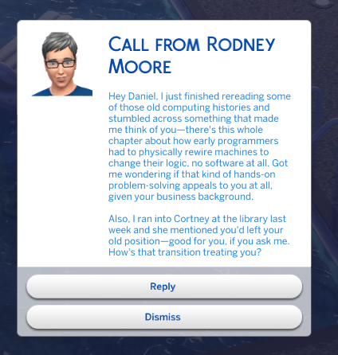

Phone Calls
Random sims call you in character — your kid's friend, your boss, your ex. Each voice shaped by traits, age, mood, and your shared history.
Phone calls, texts, stories, and drama — generated live for your Sims by Claude AI.
Every command reads what's actually happening in your game — who lives in the household, their traits, their relationships, their mood, where they are — and sends it to Claude as context. The AI doesn't make up sims that don't exist or invent jobs they don't have. It writes for the people in front of it.
A flirty teen texts in lowercase with emoji. An elder writes long, warm paragraphs. A grandparent dotes; an enemy sneers. A Goofball cracks jokes mid-call. The voice fits.
Random sims call you in character — your kid's friend, your boss, your ex. Each voice shaped by traits, age, mood, and your shared history.
Quick check-ins, group drama, gossip. Hit Reply on the popup and they keep the conversation going — full back-and-forth, in character.
Soap-opera narration of what's happening in your household, written like a let's-play. Continues from past entries so it builds across sessions.
Surprises that fit your sims' actual lives — promotions, fights, weird neighbors, family secrets. Always actionable; tells you exactly what to do next.
Multi-session 3-act arcs with concrete gameplay goals — raise a skill, hit a career level, complete an aspiration. Pick a theme or let Claude pick one.
Sits quietly in the background and fires content while you play. Set the interval, set the mix (calls, texts, stories, events), forget about it.
Same code, totally different writing — Claude adapts to each sim's age, traits, and how they feel about you. Here are real texts from the same save:




Every call and text is filtered through what's true in your save right now — not generic AI fill.
If a sim lives in your world, they'll suggest grabbing coffee. If they live in San Myshuno and you're in Willow Creek, they keep it long-distance — no "come over" from across the map.
Sim quit a job, got promoted, had a baby, got married, aged up? The mod catches it automatically and your friends bring it up — "heard you quit, you good?" — within days of it happening.
Your Outgoing Adventurous dad doesn't text you like a frat bro — he texts like your dad. Parents sound parental, siblings tease, spouses get intimate, grandparents ramble warmly.
Sims on the lot don't randomly call you from the next room. A teen acquaintance doesn't suddenly text an elder unless they're family or close friends — cross-generational pairings stay grounded.
Friends are warm. Acquaintances are polite. Enemies are openly hostile — no "rooting for you 💕" from someone who hates your guts. The current relationship beats anything from old chat history.
When you text a sim, they "think" for a few seconds before replying — close friends fast, lazy or hostile sims drag. No more instant-psychic responses.
Open the cheat console with Ctrl+Shift+C, type a command, press Enter.
claude.call — incoming callclaude.text — incoming textclaude.sendtext Bella Goth hey!claude.sendcall Bella Goth I have newsclaude.reply <message>claude.story — narrative updateclaude.storyline — 3-act arcclaude.storyline_theme romanceclaude.drama — household dramaclaude.dialogue — in-character linesclaude.event — random eventclaude.goals — session goalsclaude.challenge — gameplay challengeclaude.auto_events onclaude.status — setup & all commandsclaude.chat <message> — freeformclaude.journal — recent historyclaude.reload — after editing configGrab the latest release from the downloads page. You need two files: ClaudeAI.ts4script and claude_config.cfg.
The mod uses Claude (made by Anthropic) to write the dialogue and stories. You need your own API key — it's free to sign up, and you only pay for what you use. A typical session runs about 25 cents to a dollar, depending on how often you generate long stories.
sk-ant-api03-… followed by a long string. You only see it once — if you close the dialog without copying, you'll need to make a new one.
That's it for the Anthropic side — the key is yours. Keep it safe.
Move both downloaded files into:
Documents/Electronic Arts/The Sims 4/Mods/If you have Sims 4 mods already, you've been here before — same folder.
Open claude_config.cfg with any plain text editor (TextEdit, Notepad, VS Code — anything that saves plain text). Find this line near the top:
api_key = YOUR_API_KEY_HEREReplace YOUR_API_KEY_HERE with the key you copied. It should look like:
api_key = sk-ant-api03-Xy7…(your full key)…Save the file.
In The Sims 4, open Game Options → Other and tick both:
Restart the game. When the main menu loads, you'll see a notification popup confirming the mod is active.
Inside any household, open the cheat console with Ctrl+Shift+C and type claude.status to see all the commands and confirm everything's wired up.
For storytelling. The base game's phone calls and texts are limited dropdown options — useful for gameplay, repetitive for narrative. This mod replaces them with text written specifically for your household by Claude, a large language model by Anthropic.
If you're a storytelling-focused player who's tired of the same scripted lines and wants your sims' relationships to feel alive, this is for you.
No. The mod doesn't modify your saves, sims, or world. It only reads game data (who lives in the household, their traits, mood, and relationships) and shows generated text in notification popups and phone dialogs.
Generated content is saved separately in ClaudeAI_Journal.json inside your Mods folder, so the AI can reference past interactions across sessions. Uninstalling the mod removes everything cleanly — delete the .ts4script, config, and journal files.
Just what's needed for the current command — names, ages, traits, mood, careers, aspirations, household members, and relationship history. Nothing personal about you, no real names beyond what your sims are named, no save file contents.
Per Anthropic's API terms, your prompts are not used to train models. The data goes from your computer directly to Anthropic's API and back — there's no middleman server.
Yes. The key lives only in claude_config.cfg on your computer. It's never uploaded anywhere except to make the API call to Anthropic. The mod doesn't have a server, doesn't phone home, and isn't open to anyone else.
That said, treat the key like a password — don't paste it in screenshots, Discord, or screen-shares. If you ever suspect it leaked, revoke it at console.anthropic.com/settings/keys and make a new one.
Yes. Everything is opt-in. Auto-events (random calls/texts/stories while you play) can be toggled with claude.auto_events off in the cheat console. You can also edit claude_config.cfg to disable specific auto-event types, change interval/chance, or restrict which sims can call you.
If you don't run a command, nothing happens. The mod is dormant until you trigger it.
Yes — drop the .ts4script into ~/Documents/Electronic Arts/The Sims 4/Mods/ and it works identically to Windows. Same commands, same behavior.
You pay Anthropic directly for what the mod actually uses — there's no subscription to me or anyone else. Per-command estimates based on typical sim context size:
| What | Model | Per call |
|---|---|---|
| Calls, texts, events, dialogue, goals | Haiku | ~$0.005 |
| Story, storyline, drama | Opus | ~$0.05–0.15 |
| Freeform chat | Opus | ~$0.02–0.05 |
A typical session of ~30 Haiku commands costs around $0.15. A heavier session with multiple Opus story/storyline generations usually lands between $0.50 and $1.50. Most casual players spend a few dollars a month at most.
You can set every command to use Haiku in the config to cut costs by roughly 20× if you don't need long-form narration.
No. All API calls happen on background threads, so the game keeps running while text is generated. You'll see a notification popup when the response arrives, usually within a few seconds.
The mod needs an internet connection to call Claude's API. If you're offline, commands silently fail without interrupting your game — no crashes, no popups. Your sims still play normally; you just won't get AI-generated content during offline sessions.
No. The Sims 4 supports script mods officially through its Mods folder and Custom Content settings. This mod uses the documented script-mod system and doesn't modify any game files. EA's stance on script mods is that they're allowed; they just won't support issues that occur while mods are installed.
Recent changes from the dev branch — the mod's actively maintained.
Where the mod is heading. Not a contract — priorities shift based on what you all report and ask for.
Calls and texts that fire when something happens in your save. Get dumped → your best friend texts to check in. Get a promotion → mom calls to congratulate. Reactive rather than random.
Block a specific sim from ever calling. Mark someone as "texts only, no calls." Set frequency per contact. Give your protagonist control over who can reach them.
Big v2.0 push: settings, per-sim preferences, and most day-to-day actions move into proper in-game menus. Click your sim's phone to configure the mod or open the Claude AI hub. Click another sim to set per-contact preferences (block calls, mark as VIP, custom relationship label). The cheat console stays as a power-user fallback, but it stops being the primary way to interact.
Tell the mod about dynamics the game doesn't natively label. Mark a sim as your mentor, your daughter's older boyfriend, your estranged half-sibling, your childhood best friend, your work nemesis — and the AI will write calls and texts that reflect that, even when the in-game relationship data is just "acquaintance."
The roadmap reflects what's bubbled up so far. If something would make your save more fun — a feature, a tweak, a weird hypothetical — pitch it. Bug reports and feature requests use the same form.
Submit an ideaThe mod is actively maintained and bug reports get read. Use the form below and you'll be filling out a GitHub issue with structured fields (what happened, log excerpt, screenshots) — no GitHub experience required, just sign in.
Report a bugOr browse existing reports first to check if it's already known.
The mod is free and always will be. If it's making your save more fun, throwing a few dollars on Patreon helps me keep building it — new features, bug fixes, and weirder ideas like AI-generated neighbours and on-the-fly storylines.
Become a patronPrefer Bitcoin? Scan or copy the address:

351FwouuUN7QRNGy6iDXXFwr7rgt4qDnHx